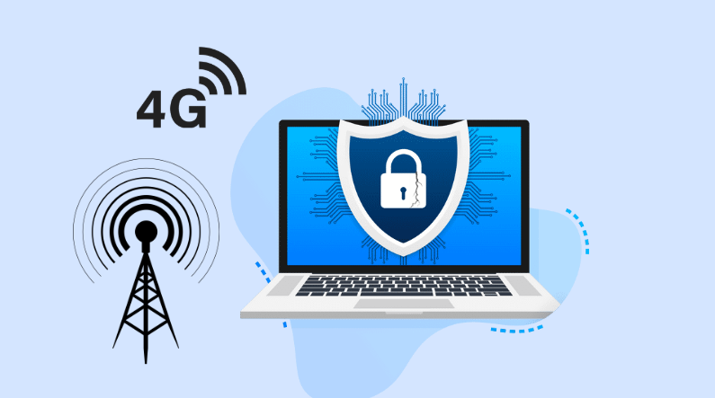

A Agência Nacional de Telecomunicações (Anatel) iniciou uma investigação para apurar as possíveis consequências do uso de um software pela Agência Brasileira de Inteligência (Abin) que teria acesso a dados da rede de telefonia 4G.
O programa em questão, conhecido como LTESniffer, é uma ferramenta capaz de detectar o tráfego de dados entre as antenas responsáveis por transmitir o sinal 4G — também chamado de LTE (Long Term Evolution). Essa tecnologia é amplamente utilizada em dispositivos móveis, como celulares e tablets, permitindo a comunicação sem fio por meio de ondas de rádio.
A investigação da Anatel busca entender se o uso desse tipo de software pode representar riscos à privacidade dos usuários e se houve violação das normas de segurança e sigilo das comunicações no país.

O uso de softwares como o LTESniffer levanta preocupações sobre a privacidade dos usuários de redes 4G. Para resolver esse problema, algumas medidas podem ajudar:
Com essas ações, é possível proteger a privacidade dos cidadãos sem comprometer a segurança das redes.